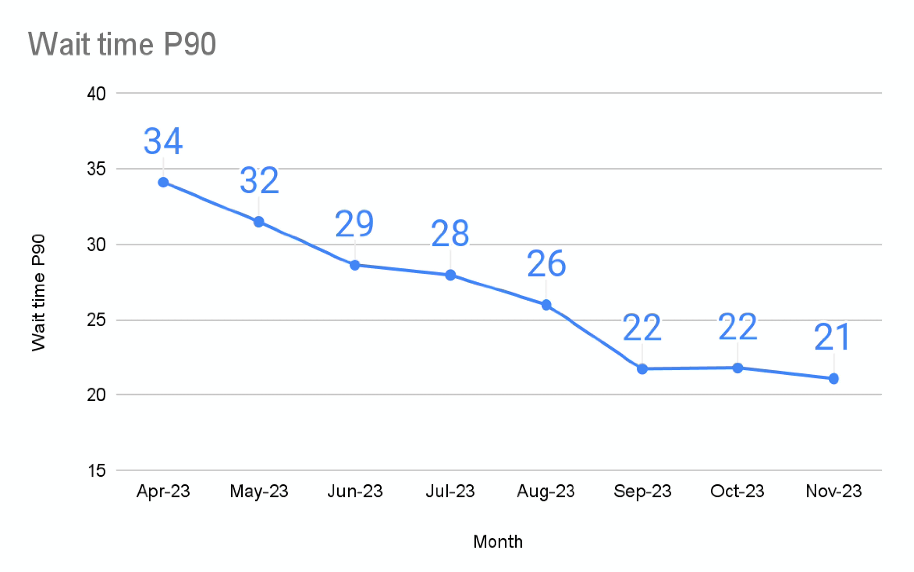
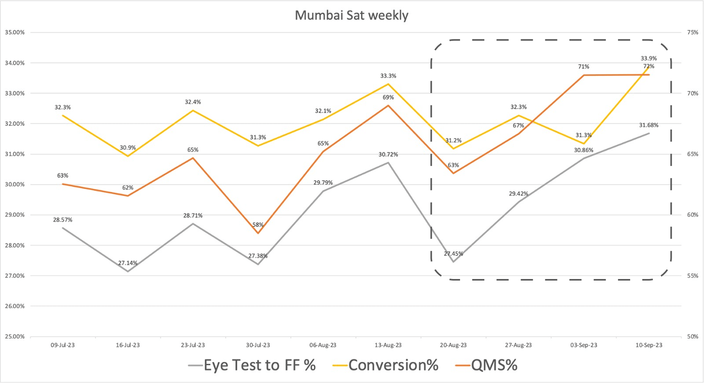
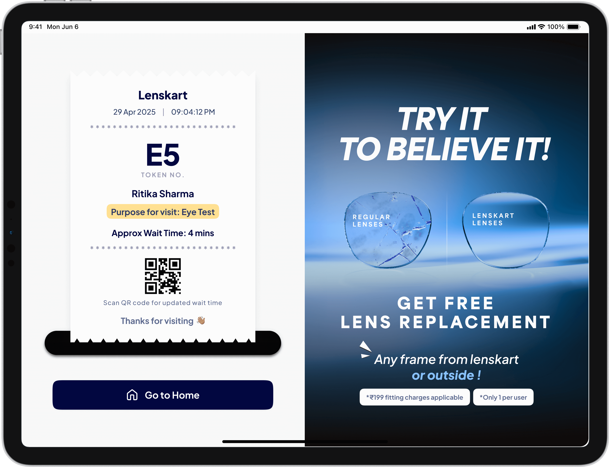
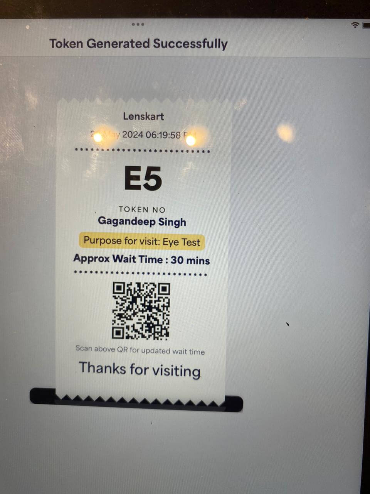
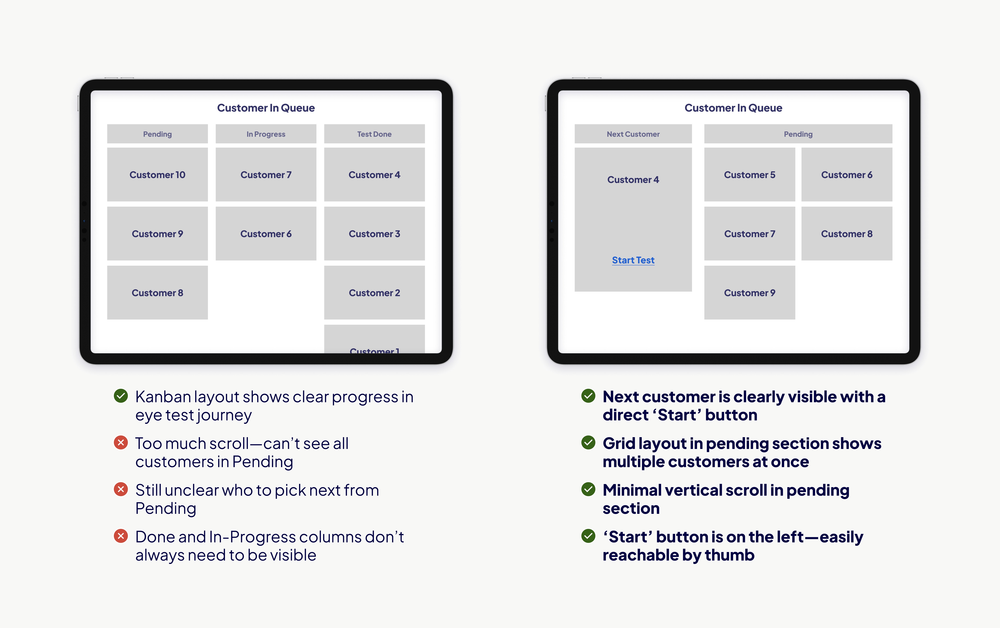
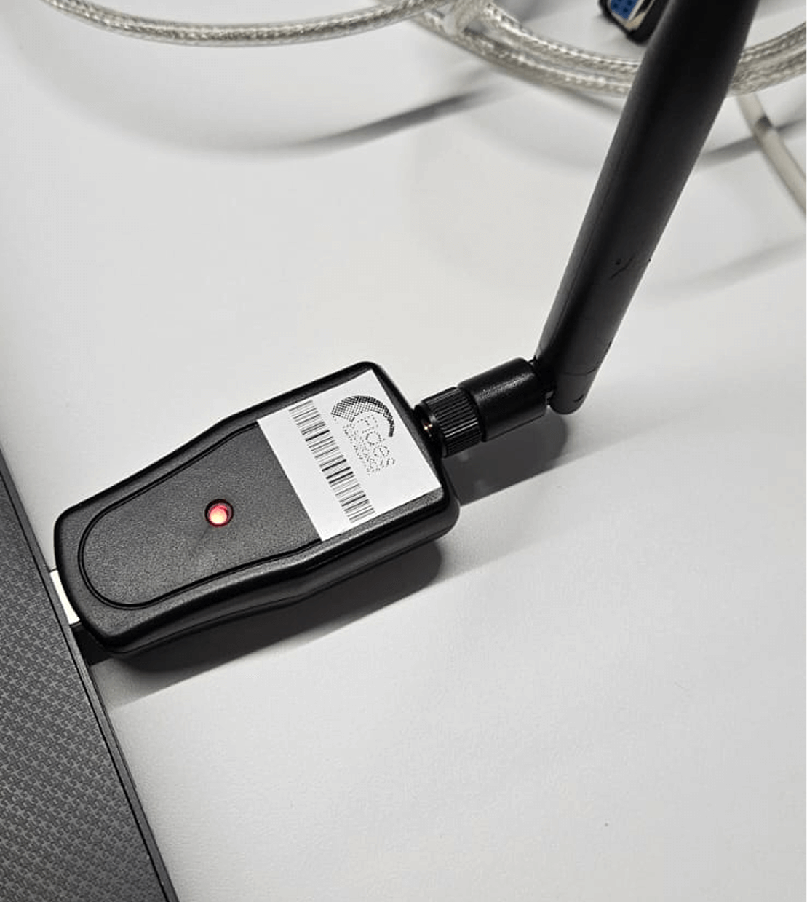

About the Project
Lenskart's retail stores were facing a critical bottleneck: eye tests. Customers walked in excited to buy eyewear, but were met with an average 34-minute wait for their eye examination. This wasn't just an inconvenience — it was driving walk-outs, hurting conversions, and creating chaos for store staff during rush hours.
There was zero visibility into the queue. Customers didn't know how long they'd wait. Staff couldn't prioritize effectively. And during peak hours, the store descended into confusion.
The Customer Problem
No visibility into queue position, unpredictable wait times, frustrating experience that turned potential buyers into walk-outs.
The Staff Problem
No system for managing eye test queues, manual coordination between sales associates and optometrists, chaos during rush hours.
Users
Customers
Walk-in visitors at 1600+ Lenskart stores looking to buy eyewear, needing eye tests as part of their purchase journey.
Optometrists
Eye care professionals stationed at each store, conducting comprehensive eye examinations for walk-in customers.
Sales Associates
Store staff managing customer flow, coordinating between eye tests and product selection, handling tokens and queues.
Context
An optometrist is an eye care professional who performs comprehensive eye exams. At Lenskart stores, they're the bottleneck — each test takes 8-15 minutes, and most stores have only 1-2 optometrists on duty at any time.
Timeline
Research & discovery phase: 4 weeks. Design iterations: 6 weeks. Development & testing: 8 weeks. Total: ~18 weeks from kickoff to first rollout in Q2 2023.
User Flow
The end-to-end flow covers the entire customer journey from walking into a Lenskart store to leaving with a prescription.

Impact


Key Insight
The token system didn't just reduce wait times — it gave customers visibility into their position, which reduced perceived wait time even further. Customers who could see their queue position were significantly less likely to walk out, directly contributing to the 2.7% sales conversion increase.
Customer Benefit
Transparent wait times, clear queue position, smoother in-store experience leading to higher satisfaction and repeat visits.
Business Benefit
Higher conversion rates, increased store ratings, better staff utilization, and measurable revenue impact across 1600+ stores.
Research
Why Redesign?
Major research insights from store visits and customer interviews pointed to a fundamentally broken experience.
User Quote
"Pata nahi kitna time aur lagega"
"I have no idea how much longer this will take" — overheard at a Lenskart store during a weekend visit
UX Audit of Old Flows
Audited the existing store flows against 3 core heuristic principles to identify structural problems.
Visibility of System Status
Customers had zero visibility into queue position, estimated wait time, or test progress.
User Control & Freedom
No ability for customers to check status, leave and return, or understand the process steps ahead.
Match Real World
The digital system didn't match the physical store flow, creating confusion between what staff saw and what customers experienced.
Benchmarking: Lenskart Store Visits
Visited multiple Lenskart stores, conducted impromptu interviews with staff and customers, and analyzed CCTV footage via Tango AI to map real customer behavior patterns.


Positive Observations
Staff were genuinely trying to manage queues manually. Customers appreciated when given even rough time estimates. Store layout had logical flow from entry to test room.
Things to Avoid
Staff overwhelmed during peak hours. No standardized process across stores. Different stores had different workarounds, creating inconsistent experience.
Benchmarking: Other Brands
Studied queue management systems at McDonald's (self-service kiosks), KFC (token-based ordering), and airports (flight status displays) to identify patterns that could transfer to Lenskart's context.


Affinity Mapping & Feature Matrix
Synthesized all research insights through affinity mapping sessions and created a feature priority matrix with the PM to define what to build first.


Design System Updates
Updated the Lenskart design system to support the new iPad-first interfaces — added larger touch targets, new component sizes, and iPad-specific patterns.
New Components
Title XL size, xl Button variant, lg Checkbox/Radio for iPad touch targets, Modal popup component for confirmations.
Why iPad-First
Store staff use iPads for customer management. Larger touch targets reduce errors during busy periods. Components needed to work at arm's length.
Wireframes & UI
1. Purpose of Visit Screen
Explored 4 wireframe options for the initial screen customers see when their visit begins. Needed to capture visit intent quickly while building trust.


2. Token Screen
Inspired by physical receipts and boarding passes. The token gives the customer a tangible reference point for their position in the queue.


3. Customer List for Eye Test
The old version was a flat, unprioritized table. The redesign introduced a grid layout with clear "Next Customer" highlighting, status indicators, and time-in-queue visibility.
Old Version Issues
Flat table with no visual hierarchy. No "next customer" indicator. No time-in-queue data. Staff had to manually track who was next.
Redesigned Version
Grid layout with prominent "Next Customer" card, color-coded status, elapsed wait time, and one-tap actions for staff.


4. Automatic Prescription Retrieval
The biggest time-saver. Prescription entry went from 5-7 minutes of manual input to 10-15 seconds with automatic retrieval via a 4-digit code mapping system.
5-7 min manual entry
Partial automation
Improved mapping
10-15 seconds

Important Decisions
Get Visit Purpose Before Mobile Number
Instead of asking for the phone number first (the old flow), we ask customers why they're visiting. This builds trust by showing we care about their intent before asking for personal data. It also lets staff route customers more efficiently — someone coming for a repair doesn't need an eye test slot.
Customer Profile Selection (Primary & Secondary)
My original suggestion: allow customers to indicate if they're also shopping for someone else (e.g., a spouse or parent). This created primary and secondary profiles per visit, letting staff prepare for multiple eye tests upfront instead of discovering them mid-visit. Reduced repeat queue-joining significantly.
Prescription Syncing Desktop App (Patent Pending)
Designed a Windows desktop application that syncs prescription data from the autorefractor machine to the iPad app via local Wi-Fi adapters. This eliminated manual prescription entry entirely. The solution uses a local network approach (no cloud dependency), making it work reliably even in stores with poor internet. Patent currently pending.


Evolution
Looking back, there are things I'd approach differently. The initial rollout could have benefited from more A/B testing on the token screen layout. The prescription syncing solution, while effective, required hardware procurement that slowed adoption in some stores.
What came next: the system expanded to cover more store operations beyond eye tests. The token system became the backbone for all in-store customer management, and the design patterns established here were adopted across Lenskart's retail technology stack.